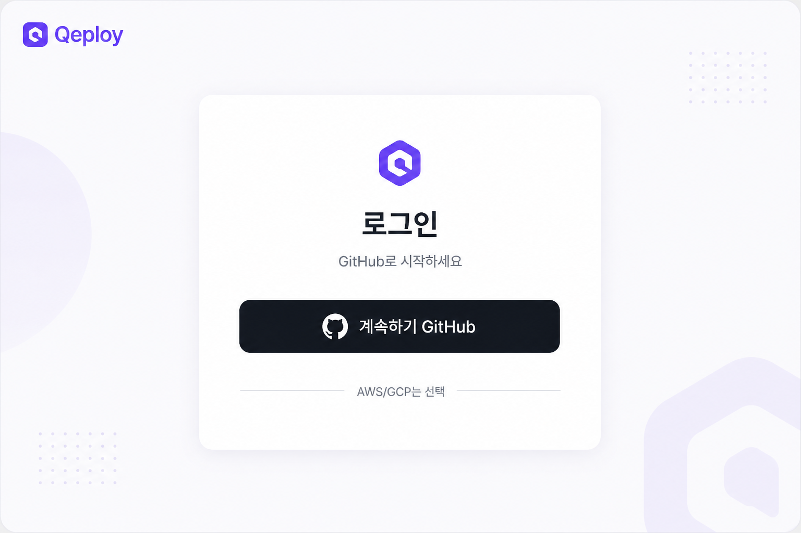
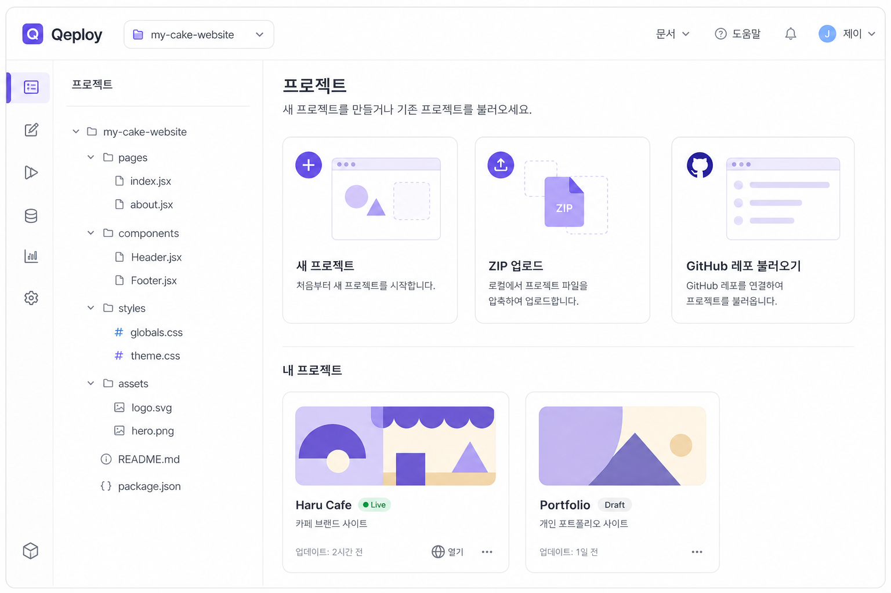
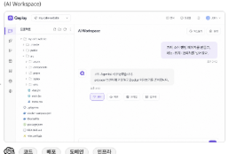
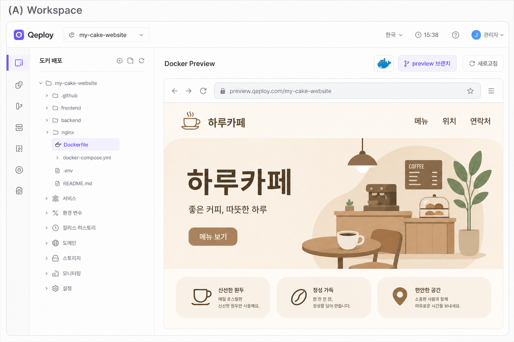
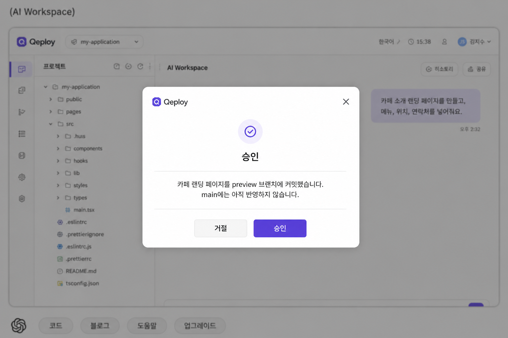
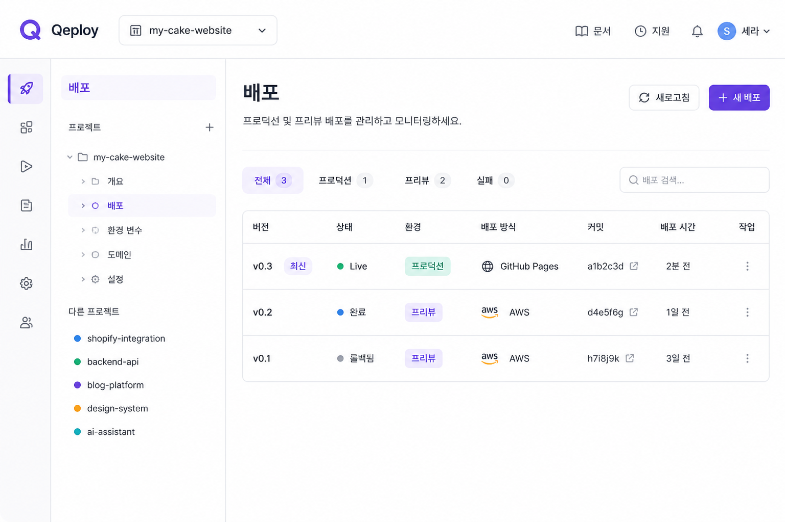
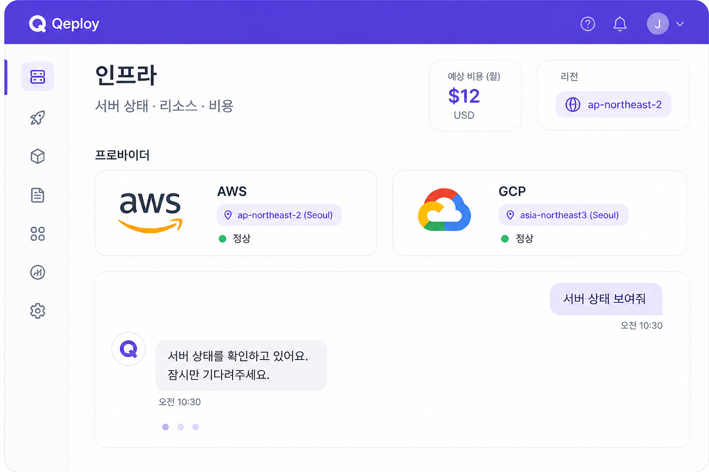

01
GitHub 로그인

GitHub로만 로그인합니다. AWS/GCP 연결은 필수가 아닙니다.
GitHub 로그인 → 프로젝트 시작 → 자연어 요청 → Docker 미리보기 → 승인 → 배포 → 도메인 → 인프라 운영 · 화면은 가상 예시 UI

GitHub로만 로그인합니다. AWS/GCP 연결은 필수가 아닙니다.

빈 생성 · ZIP · GitHub 레포 중 하나로 시작합니다.

AI Workspace에서 요청합니다. Agent 분기는 비공개입니다.

preview 브랜치에 커밋하고 컨테이너에서 동작을 검증합니다.

한 줄 요약만 확인합니다. 승인 후에도 즉시 main 반영 없음

PR · merge 후 GitHub Pages 또는 AWS/GCP에 배포합니다.

기본 URL · qeploy.com 서브 · 커스텀 도메인을 연결합니다.

이후에도 자연어로 상태 · 리소스 · 비용을 운영합니다.